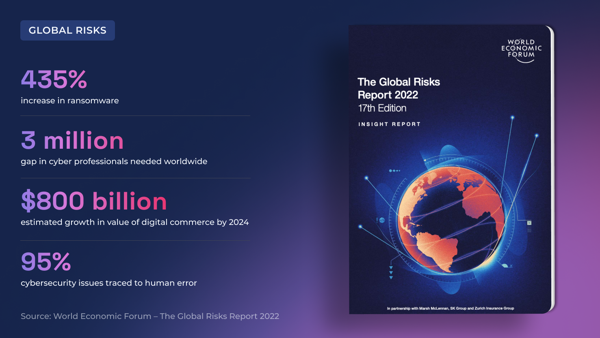
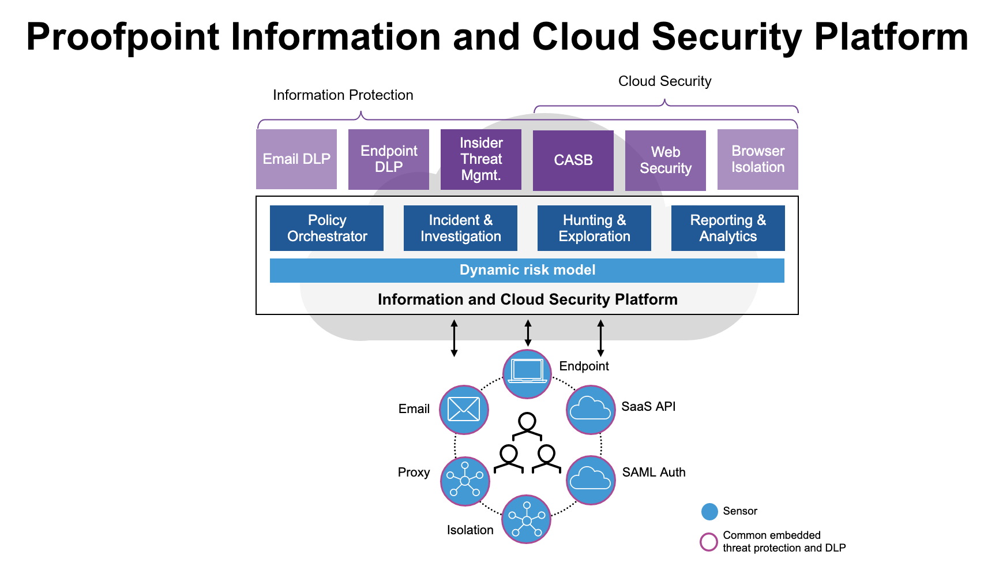
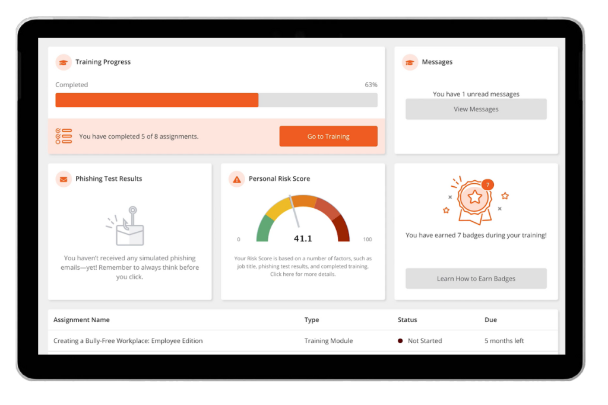
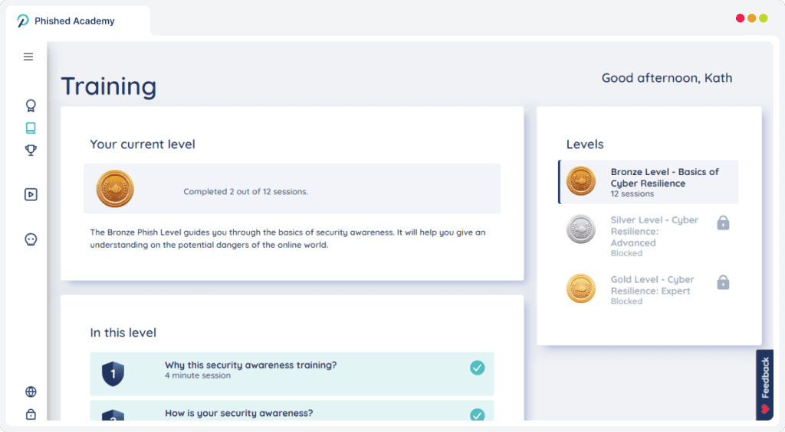
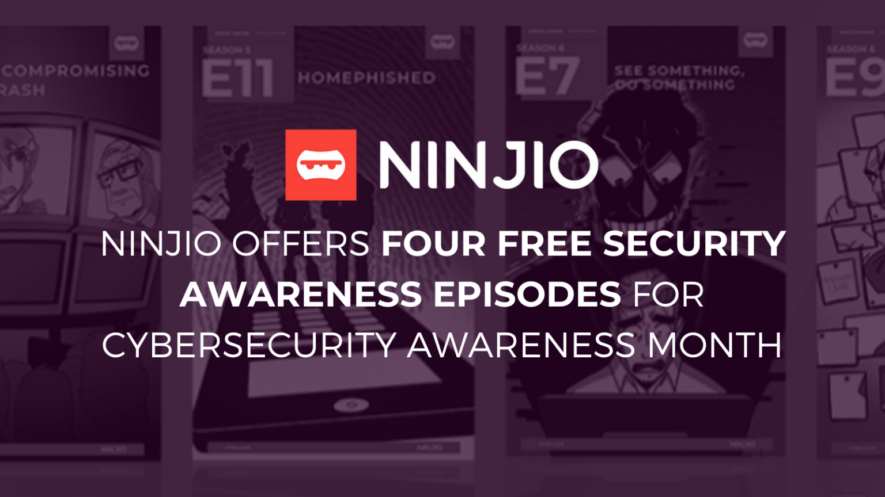
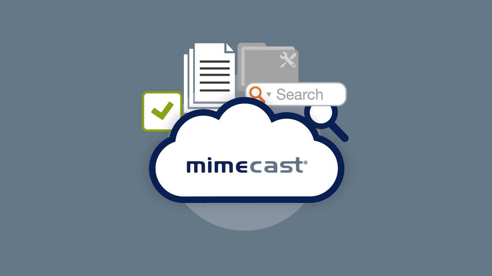
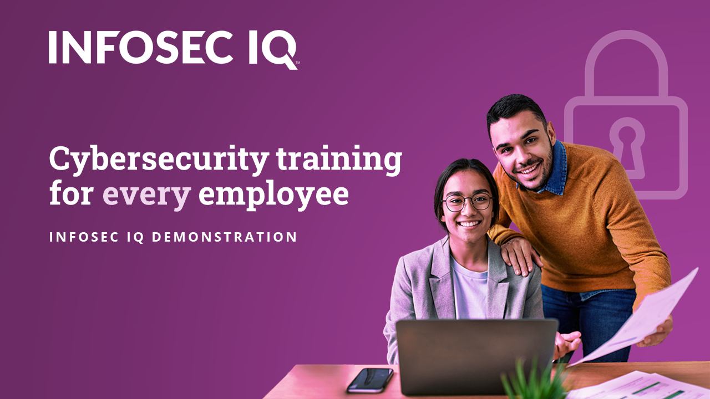

> CNO V - Seguridad Informática _
> Universidad Politécnica de San Luis Potosí _
> Octavo semestre _
PR02 | Investigación comparativa de plataformas
La ingeniería social es de los métodos más usados para vulnerar organizaciones, aprovechándose del usuario final en lugar de atacar directamente a los sistemas. Por lo tanto, empresas buscan mitigar este problema, utilizando plataformas diseñadas para lanzar campañas de phishing simuladas y poder concientizar a los usuarios.
Se analizaran y compararan distintas plataformas, las cuales son: Hoxhunt, Proofpoint, KnowBe4, Cofense, Phished, NINJIO, Mimecast e Infosec IQ. Durante la investigación se evaluarán capacidades técnicas, métricas utilizadas para calcular el nivel de riesgo de los usuarios y métodos de enseñanza. Además de los controles éticos de cada plataforma, con el fin de la forma en que concientizan a los usuarios sin que el entrenamiento se vuelva estresante o repetitivo.
Es una plataforma la cual se centra en la defensa contra ataques de ingeniería social como el phishing. Utiliza un sistema de IA, la cual sirve para crear rutas de aprendizaje personalizadas dependiendo el perfil del usuario. Además, es una plataforma que intenta premiar al usuario con el fin de mejorar su aprendizaje.

Imagen 1: Hoxhunt.
Proofpoint se especializa en la defensa contra ataques de phishing en empresas. Utiliza IA para tomar amenazas reales de su propia página web y convertirlas en simulaciones seguras, con el fin de crear rutas de aprendizaje para los usuarios.

Imagen 2: Proofpoint.
Enfatiza en que los errores humanos son la principal causa de los hackeos. Sirve para dar capacitación continua a organizaciones para crear conciencia y evitar este tipo de hackeos.

Imagen 3: KnowBe4.
Cofense busca que los mismos empleados se conviertan en sensores activos de seguridad. En lugar de solo evaluarlos, los entrena para que ayuden a detectar amenazas reales.
Imagen 4: Cofense.
Es una plataforma automatizada usando IA. Analiza continuamente cómo se comporta cada usuario para adaptar el nivel de las pruebas de forma automática.

Imagen 5: Phished.
Ninjio utiliza videos animados inspirados en hackeos reales para enseñar ciberseguridad, haciéndolo que el aprendizaje sea más dinámico.

Imagen 6: NINJIO.
Mimecast es una plataforma de simulaciones de seguridad de correos electronicos, tiene el fin de proteger mejor las comunicaciones de la empresa.

Imagen 7: Mimecast.
Es una plataforma muy estructurada creada por Infosec Institute. Tiene la finalidad de crear programas de entrenamiento en ciberseguridad.

Imagen 8: Infosec IQ.
| Plataforma | Integración | Analítica | Controles Éticos | Limitaciones Identificadas |
|---|---|---|---|---|
| Hoxhunt | Usa IA para mandar simulaciones personalizadas en correo, Slack y Teams. Tiene un botón de reporte que se conecta directo al SOC. | Mide click rate, reporting rate, detection rate y nivel de resiliencia. | Usa refuerzo positivo y evita campañas agresivas para no hacer sentir mal al usuario que se equivoca. | Depende mucho de tener el correo corporativo muy bien integrado y procesos SOC ya armados. |
| Proofpoint | Toma amenazas reales y las convierte en simulaciones seguras. Usa PhishAlarm para mandar reportes directos al SOC. | Evalúa click rate, reporting rate, knowledge score de las evaluaciones. | Permite bajar la dificultad para evitar el estrés en los usuarios. Las métricas se usan solo para capacitar. | Está pensada para empresas muy grandes, lo que la hace compleja y costosa. |
| KnowBe4 | Tiene campañas automáticas y se conecta con Active Directory para administrar usuarios y lanzar spear phishing personalizado. | Su métrica principal es el phish-prone percentage, además de click rate y credential submission rate. | Evita campañas manipulativas. Usa métricas generales para que no se vuelva repetitivo. | Tiene un contenido extenso el cual requiere que alguien lo esté administrando constantemente. |
| Cofense | Recrea ataques reales además de utilizar un botón de reporte que se conecta rápido con los sistemas SIEM de la empresa. | Mide click rate, reporting rate, threat detection rate y response time. | Fomenta el trabajo en equipo con el área de seguridad. No busca solo engañar por engañar. | Depende muchísimo de que los usuarios participen y reporten para poder detectar amenazas reales. |
| Phished | Sus algoritmos de IA adaptan las pruebas automáticamente según el nivel del usuario. Se integra directo al correo corporativo con Zero Incident Mail. | Calcula behavioral risk score, click rate, reporting rate y training engagement rate. | Si el usuario tiene bajo riesgo, le manda menos pruebas para no aburrirlo ni generarle estrés. | Al depender tanto de la IA, necesita de mucho historial de datos para ser precisa y evitar errores. |
| NINJIO | Usa videos animados interactivos basados en hackeos reales. Se integra fácil con inicio de sesión único (SSO). | Mide click rate, reporting rate y engagement rate con los videos, lo cual aumenta la retención de usuarios. | Como usa historias animadas, elimina la presión a las pruebas y provoca confianza en los usuarios. | Su análisis de datos no es tan profundo como el de otras plataformas que se centran solo en métricas técnicas. |
| Mimecast | Se conecta directo con sus propios filtros de seguridad de correo para cruzar resultados con amenazas reales. | Saca risk score por usuario, click rate, reporting rate, y trend analysis de cómo cambia el comportamiento. | Hace pruebas realistas, cuidando el no romper la confianza del empleado, priorizando siempre educar. | Depende mucho de la aplicación de utilizar el sistema de seguridad de correo de Mimecast. |
| Infosec IQ | Automatiza campañas y se conecta con plataformas de aprendizaje (LMS) usando el estándar SCORM. Incluye más de 2000 plantillas reales. | Evalúa click rate, reporting rate, training completion rate y mejora en tiempos de reporte. | Se utiliza para enseñar. Si te equivocas, simplemente te asignan un curso sin penalizarte. | Se necesita una buena planeación para poder adaptar bien los cursos a los diferentes perfiles que hay en la organización. |
Después de realizar la investigación cada una de las plataformas de simulación de phishing, se puede concluir que, aunque las plataformas buscan reducir el riesgo humano en contra de la ingeniería social, cada una presenta ventajas y limitaciones distintas las cuales dependen de cada empresa que quiera utilizarlas.
La ventaja principal de plataformas como Hoxhunt y Phished es su enfoque adaptativo usando IA para personalizar las simulaciones según el comportamiento de cada persona. En cambio, Proofpoint y Mimecast tienen la ventaja de integrarse directamente con los ecosistemas de correo corporativo para correlacionar simulaciones con amenazas reales. KnowBe4 cuenta con la ventaja de su gran cantidad de contenidos para programas a gran escala, mientras que NINJIO destaca por su micro-aprendizaje audiovisual que reduce la presión sobre el usuario.
Por último, Cofense se distingue por buscar que los empleados sean sensores activos de seguridad, Infosec IQ resulta ser la plataforma ideal para llevar programas de entrenamiento estructurados y compatibles con plataformas de formación.
Bienvenido a esta simulación educativa.